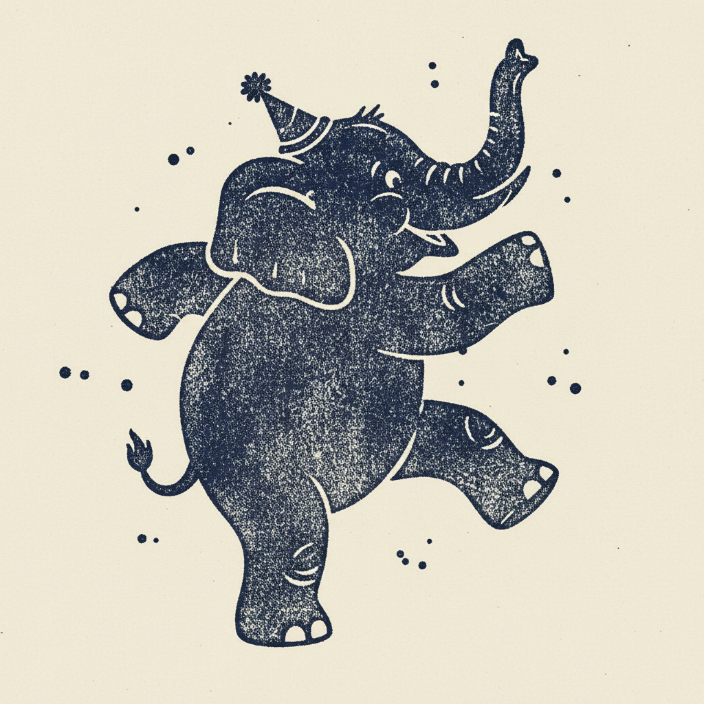
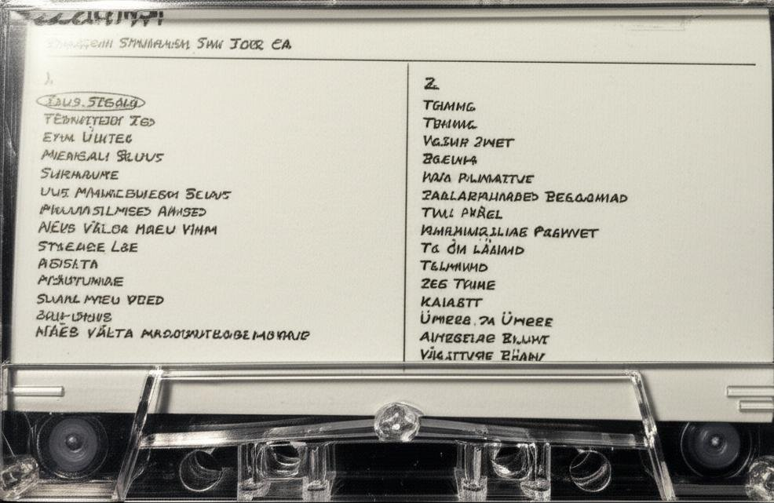
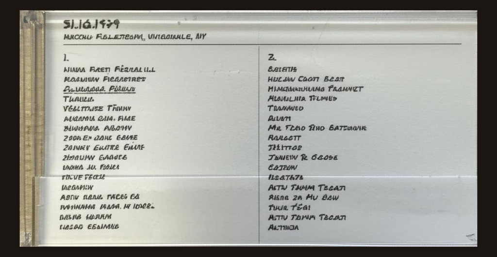
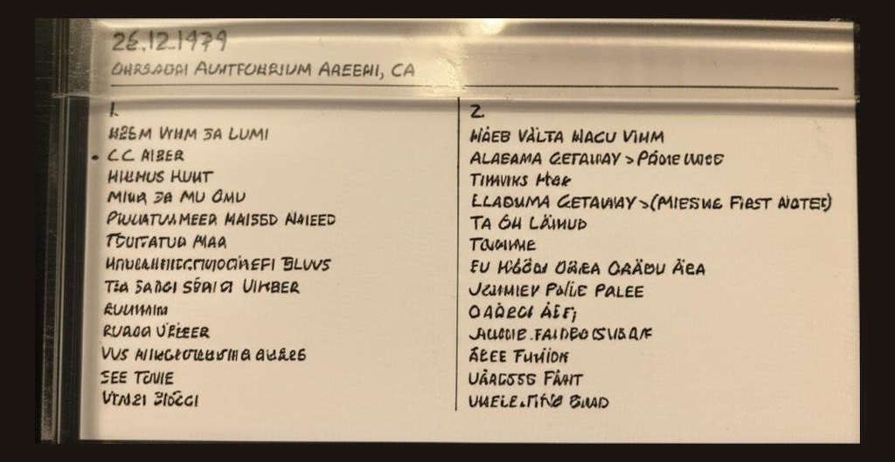
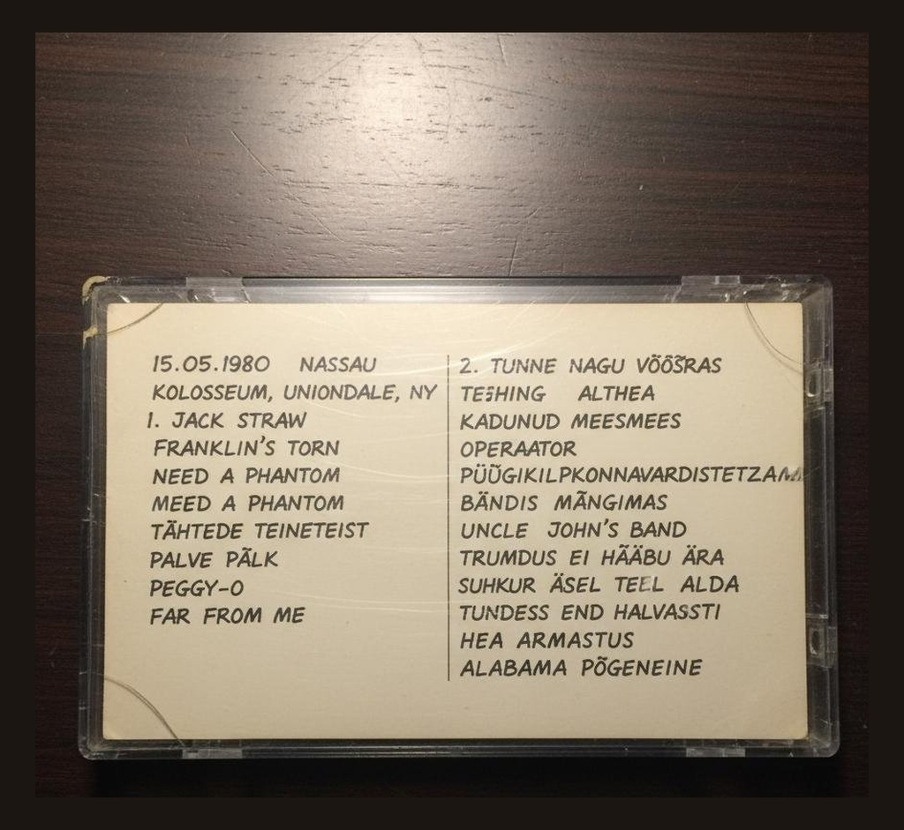
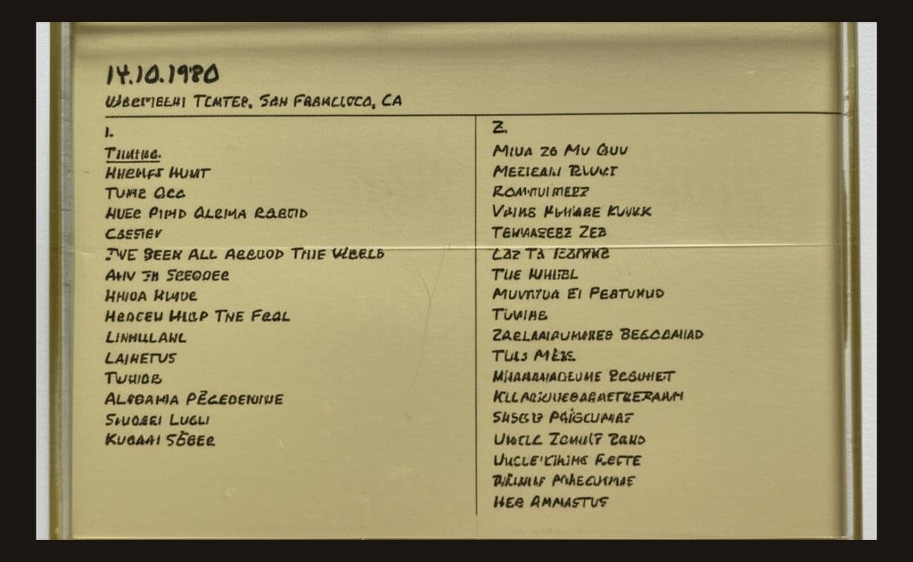

Hendrik Tamm left Tallinn in 1979, the same year Brent Mydland joined the Grateful Dead. He settled in Toronto, got a job at a print shop, and discovered the Dead through a co-worker who passed him a tape of the October '79 Cape Cod Coliseum show. He started trading tapes by mail — first within Canada, then with collectors in California and the Midwest — and built a collection focused entirely on Brent's first twenty months with the band. He has been making this argument for forty years: that the period from April 1979 through December 1980 is the most underrated chapter in Dead history, and that Brent Mydland's arrival didn't just save the band — it made them a new animal entirely.
Keith and Donna Godchaux left the band in February 1979. Brent Mydland joined in April and brought a Hammond B-3, synthesizers, and a soulful voice the band hadn't had since Pigpen. Within months they were road-testing new material — Althea, Feel Like a Stranger, Alabama Getaway, Far From Me — songs that would define the next decade. The energy on stage changed immediately. Garcia was engaged again. Phil Lesh was playing with an aggression that had been missing for years. Bobby Weir started writing songs that actually worked in the live format. This collection covers twenty months of a band finding a new reason to exist — from Brent's debut at the Spartan Stadium in San Jose through New Year's Eve 1980 at the Oakland Auditorium.
Every J-card in the collection has been photographed. They are available in the app.





Listen to New Animal in the XLIIs app.